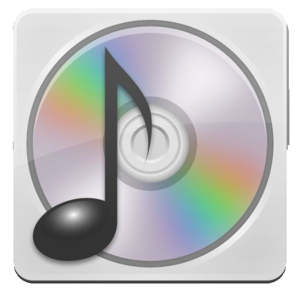

О проекте
Что такое Playmuz?
«PlayMuz» — веб-сайт для просмотра и поиска тематических музыкальных подборок и плейлистов.
PlayMuz предназначен для удобного ознакомления пользователей с тематическими музыкальными подборками.
Сайт помогает находить плейлисты по настроению, музыкальному жанру или тематике.